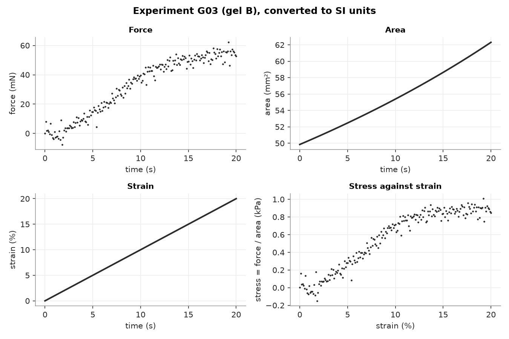
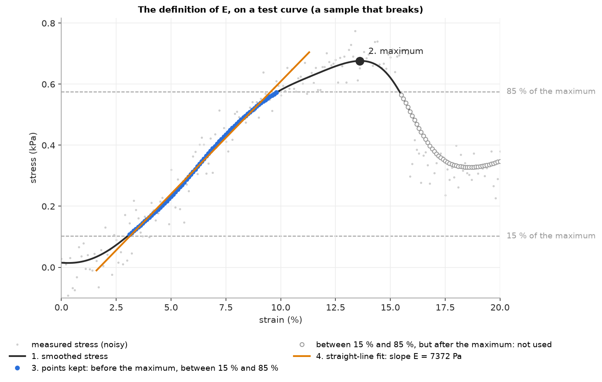
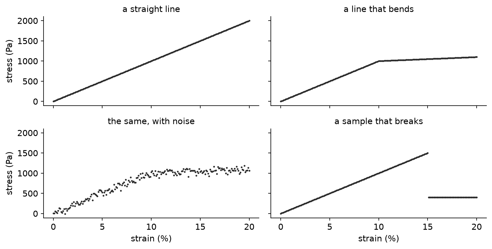
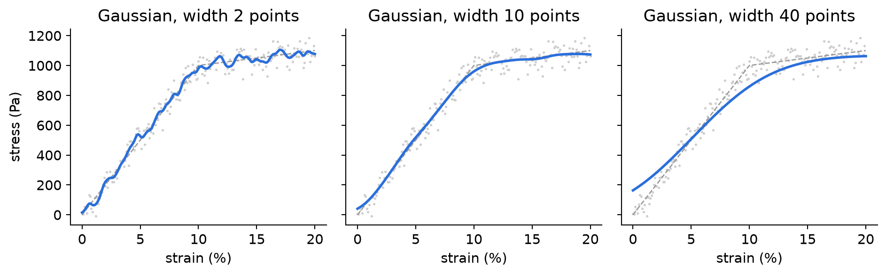

201 [0. 0.1 0.2] [ 0. 10. 20.]Biomedical Engineering Skills 2
Python 6 — Tutorial: the final exercise
Massimo Vassalli
massimo.vassalli@glasgow.ac.uk
The final exercise
How stiff is each gel? The method of the lecture, on a new problem.
This hour
- Together (about 30 minutes): the brief, step by step. For each step: what we give you, and what we ask you to do
- Together: we build the first digital data of the exercise
- On your own, with the demonstrators: download the pack, set it up, look at the data, start
Note
Everything is on Moodle from today: the brief (FINAL.md), the starting files, the data. Due Friday 20 November, 16 % of the course. You can start when you want — today is the best day to start.
DEFINE
The question
A lab has tested four types of hydrogel — gel A, B, C, D — in compression: 64 cylinders, 16 of each, on two different machines. Everything is in one Zarr store, data/gels.zarr.
What is the Young’s modulus E of each type of gel — and how much does the answer depend on how much the data are smoothed?
The answer is a table: for each type, mean ± sd of E, in kPa (and n), for three smoothing widths.
width .. points | gel A: ... ± ... kPa (n = 16) | gel B: ... | gel C: ... | gel D: ...What one test looks like

The machine records force, area and strain. Stress = force / area, at every point. A toe, a short part close to straight, a plateau — under a lot of noise.
E has a definition
- Smooth the stress.
- Find the maximum of the smoothed stress.
- Keep the points before the maximum whose smoothed stress is between 15% and 85% of that maximum.
- Fit a straight line to the smoothed stress against the strain (as a fraction). The slope is E, in Pa.

Not the “true” stiffness: a definition. Fixing it makes everybody’s numbers comparable — and it can be turned into a function and tested.
Given, and yours
| given (in the brief and the pack) | yours | |
|---|---|---|
| DEFINE | the question; the definition of E; the figures | — |
| DECOMPOSE | the five functions: names, parameters, what they return | — |
| SPECIFY | — | the five prompts; the choice of filter |
| DIAGNOSE | two small exports to check the loader; the known E of tiny.zarr |
the digital curves; the tests; the diagnosis log |
| VALIDATE | main.py, which prints the table |
the three widths; what the table says about stability |
Important
No graphs to draw this time. The figures are in the brief so that you know what the numbers look like.
DECOMPOSE
The same four steps
| step | in the final | function |
|---|---|---|
| set the environment | .venv, requirements.txt (zarr, scipy, pytest) |
— |
| open and harmonise | two machines, columns in different orders, units as names or powers of ten → one record in N, m², strain | load_experiment |
| transform | stress = force / area, strain in %; smooth the stress | stress_strain, smooth |
| quantify | E by the definition | young_modulus |
| (all the data) | every experiment, grouped by gel, mean ± sd | run_pipeline |
The same shape as the breathing study: one function per step, each with its own # PROMPT block, in mechanics.py. main.py calls them — and is given.
Step by step
Set the environment
Given
- the pack:
mechanics.py(five empty functions),test_mechanics.py(one example test),given.py,main.py,README_template.md,data/,img/
Yours
- a new folder, the
.venv, the interpreter selected in VS Code - install what you need;
python -m pytestmust say 1 failed (the example test) - at the end:
requirements.txtand the clean rebuild, pasted in the README
Tip
The clean rebuild is your proof that what you submit runs on somebody else’s computer: zip without .venv and data/, unzip into an empty folder, copy data/ in, new .venv, install, pytest, main.py.
Open and harmonise: two machines
| machine A | machine B | |
|---|---|---|
columns (attribute columns) |
force, area, strain | strain, force, area |
| force | force_unit: "N" or "mN" |
force_exp: force × 10**force_exp is in N |
| area | area_unit: "m^2", "cm^2", "mm^2" |
area_exp: area × 10**area_exp is in m² |
| strain | a fraction (0.05 = 5 %) | the same |
The units change from experiment to experiment, even on the same machine: they must be read from each experiment’s attributes. Every experiment: one group (attributes type, machine), one 2-D array data, 201 rows.
Read it by eye — together
tiny.zarr/T01/data/zarr.json, the attributes:
tiny.zarr/T02/data/zarr.json:
| machine | × to get N | × to get m² | |
|---|---|---|---|
| T01 | A | 10⁻³ | 10⁻⁶ |
| T02 | B | 10⁻³ | 10⁻⁶ |
Warning
1 mm = 10⁻³ m, but 1 mm² = 10⁻⁶ m²: the prefix is squared. And for T02, the force is the second column, not the first.
Open and harmonise: given, and yours
Given
gels.zarr: the study, 64 experiments — never written totiny.zarr: three experiments without noise, one for each way of storing units (T01, T02, T03)T01_si.csv…T03_si.csv: the same tests, exported by the machines in SI units;given.read_tablereads them- the record
load_experimentreturns:"experiment_id","type","force_n","area_m2","strain"
Yours
- the
zarr.jsonof T01–T03 (and three G’s) by eye: the first table of the README - the prompt: both machines, every unit, the conversion table, columns found by name, read-only,
zarr>=3,<4 - the tests: T01 and T02 loaded = their exports,
rel=1e-6
The exports are an independent check: the machine’s own conversion, not yours.
Transform: given, and yours
Given
stress_strain(record)→{"strain_pct", "stress_pa"}: stress = force / area at every point, strain in %smooth(stress_pa, width_points)→ a new array; width 0 = unchanged- one point every 0.1 % strain: 10 points = 1 % strain, in every experiment
- where to look:
scipy.ndimage(gaussian_filter1d),scipy.signal,skimage.filters
Yours
- the filter: which one, from which package, and what
width_pointsmeans for it (we suggest the Gaussian, as in the lecture) - the two prompts
- the width you trust — chosen on your noisy digital curve, not on the real data
Tip
Smooth the stress, not the strain: the strain has no noise.
Quantify: given, and yours
Given
- the definition of E, in four steps
young_modulus(strain_pct, stress_pa): strain in %, a stress that is already smoothed; returns E in Pa
Yours
- the prompt, with the definition word for word (and the strain turned back into a fraction)
- the digital curves that prove it: you build them
- their tests
Note
One tool you have not used: np.polyfit(x, y, 1) returns the slope and the intercept of the straight line closest to the points. The slope has the units of y divided by the units of x — which is why the strain must be a fraction.
Digital data: you build them
Why no curves are given
The pack has no curve with a known E. You make them.
- A curve you made is the only one whose answer you know for certain: you chose it
- Building it makes you decide what each part of the definition must do — and what would break it
- The same curves choose the width: on them you know the answer, on the real data you don’t
| curve | what it checks | expected E |
|---|---|---|
| a straight line | the definition and the units | the E you chose, exactly |
| a line that bends | the 85 % bound | exactly |
| the same, with noise | the smoothing | within 5 % |
| a sample that breaks | “before the maximum” | exactly |
Together: a straight line
The same strain axis as the real tests:
What must young_modulus(strain_pct, line) return? 10 000 Pa — by construction. If it returns 100, it fitted against the strain in %.
Together: a line that bends
A real curve flattens at the end. The simplest version: straight up to 10 %, then ten times less steep.
The maximum is 1100 Pa, at 20 %; 85 % of it is 935 Pa. Everything after the bend is above 85 %: it is not fitted. Expected E: still 10 000 Pa, exactly.
What if the 85 % bound were missing? The fit would include the part after the bend, and E would come out about half — even without any noise.
Together: with noise
The seed makes the noise the same every time the test runs: a test must give the same answer twice.
Expected E: 10 000 Pa within 5 % — after smoothing. Why not exactly? The noise is still partly there, and the smoothing rounds the corner.
Together: a sample that breaks
After the break the stress falls to 400 Pa — between 15 % and 85 % of the maximum. Only “before the maximum” keeps those points out. Expected E: 10 000 Pa, exactly.
The four curves

Each one is one difficulty more than the previous: when a test fails, you know which part of the definition to look at.
From a curve to a test
- The docstring is yours: what is checked, and the expected value with its source (“by construction”)
- The body comes from an assistant in a separate chat, which never sees
mechanics.py - The tolerance is part of the specification:
rel=1e-6without noise,rel=0.05with it. Why?
Warning
An expected value obtained by running your own function is not an expected value: the test would only check that the function agrees with itself.
Choosing the width: your noisy curve

Too little: the noise moves the maximum and the points kept. Too much: the corner is rounded and pulled into the fit. Your task: compute E for several widths on your noisy curve, write the numbers in the README, and choose the width you trust from them.
All the data
The pipeline: given, and yours
Given
run_pipeline(store_path, width_points)→ per type:{"mean_E_pa", "sd_E_pa", "n"}- the known E of
tiny.zarr, no noise: T01 (gel A) 5370 Pa; T02, T03 (gel B) 9500 and 10100 Pa main.py: prints the table for three widths
Yours
- the prompt: every experiment in alphabetical order, the other four functions, sd with
ddof=1, what sd is for a single experiment - the test on
tiny.zarr, width 0: gel A 5370 Pa; gel B (9500 + 10100) / 2 = 9800 Pa, n = 2 — within 1 % - the three widths in
main.py: one too small, the one you trust, one too large
Validate: what the table must answer
Once python main.py has printed the table, the README asks you to read it:
- How much do the averages change with the width?
- Is that change larger or smaller than the spread (±) within each type?
- Does the order of the four gels change?
- Which numbers would you report — and how many digits of them do you trust?
Tip
The same questions as the breathing study: does the width chosen on digital data work on every real experiment, and does the answer stay put when it should?
The tests you must have
| test | data | expected | comparison |
|---|---|---|---|
| E on a straight line | yours, width 0 | the E you chose | rel=1e-6 |
| E on a line that bends | yours, width 0 | the E you chose | rel=1e-6 |
| E on a noisy curve | yours + noise, your width | the E you chose | rel=0.05 |
| E on a sample that breaks | yours, width 0 | the E you chose | rel=1e-6 |
| loader, machine A | T01 |
T01_si.csv |
rel=1e-6 |
| loader, machine B | T02 |
T02_si.csv |
rel=1e-6 |
| the pipeline | tiny.zarr, width 0 |
5370; 9800 Pa, n = 2 | rel=0.01 |
At least these seven, all run with python -m pytest. More are welcome (T03, a curve with too few points, …).
What you submit
One zip of your folder, without .venv and without data/:
mechanics.py(five prompts and bodies),test_mechanics.py,given.py,main.py(your three widths)requirements.txtREADME.md: the data by eye, your decisions, what the assistant decided, the diagnosis log, the table, the stability paragraph, the clean rebuild- the transcript of every AI chat, from the first prompt to the last
Note
Anonymous: no name in any file. Moodle, by Friday 20 November.
Now: start
The rest of the hour
- Download the pack from Moodle, unzip it into a new folder, open it in VS Code, create the
.venv, install:python -m pytestmust say 1 failed - Look at the data by eye: the
zarr.jsonof T01, T02, T03. Fill the first table of the README — a demonstrator checks it with you - The first digital curve: the straight line, in
test_mechanics.py, with its docstring. Then the prompt foryoung_modulus— until the test passes
Tip
Then, at your own pace: the other three curves and the width, the loader, the pipeline, the job. One step at a time, each one proved before the next.

ENG2012 Biomedical Engineering Skills 2